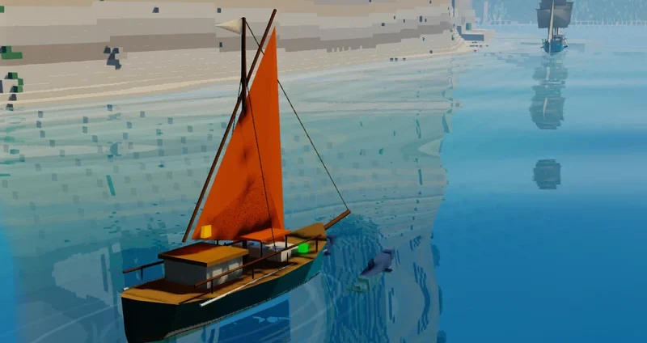

Eye the Isles
A quiet game about exploring a living archipelago, following boats and keeping the moments you notice in a journal.
Visit Eye the Isles
Simulation · Analysis · Development
We build simulations that help businesses compare scenarios, understand risk and make decisions.
Our work
Up to Change has worked in simulation and analysis for around two decades. We combine game theory and predictive models to explore how different assumptions and decisions could affect the outcome.
That might mean testing a new pricing model, seeing how a budget holds up under stress, or tracking the return on an investment.
Explore how customers and other participants might respond when conditions change.
Estimate the likelihood of different outcomes using data and assumptions.
Find patterns and relationships in historical data.
Translate business rules and relationships into a model that can be tested.
Our products
We also build apps of our own for exploration, curious puzzles and live broadcasting.

A quiet game about exploring a living archipelago, following boats and keeping the moments you notice in a journal.
Visit Eye the Isles
Tilt your iPhone to guide four companions through 67 handmade passages, solving puzzles of weight, light and cooperation.
Visit Corridorium
Stream live HDR video from your iPhone to YouTube while keeping a local recording.
Visit TubeistResearch and development
Up to Change has contributed to methods and tools that preserve history as information changes.
An open source database that keeps conflicting claims alongside their sources, timing and degrees of certainty.
A method for evolving data models while preserving earlier versions of their structure and contents.
Contact · Stockholm
Tell us what you want to explore and we can talk about how a simulation might help.